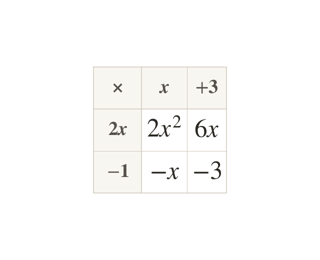
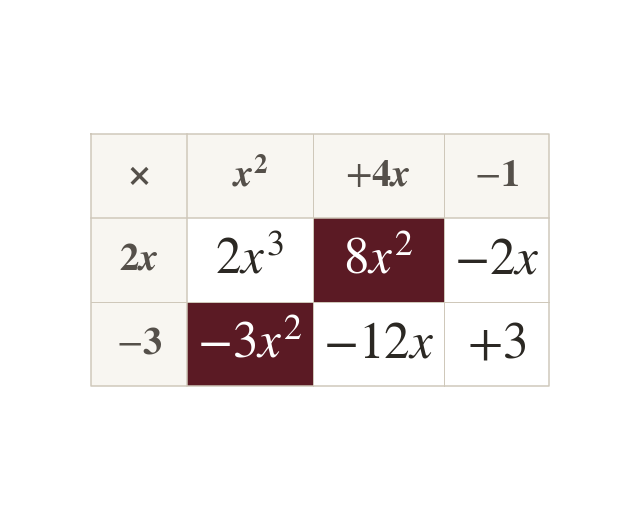
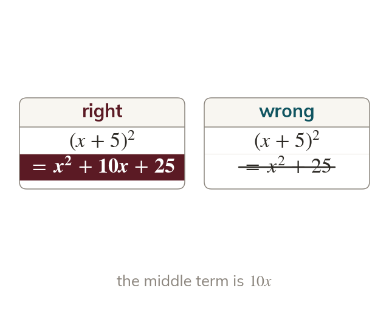
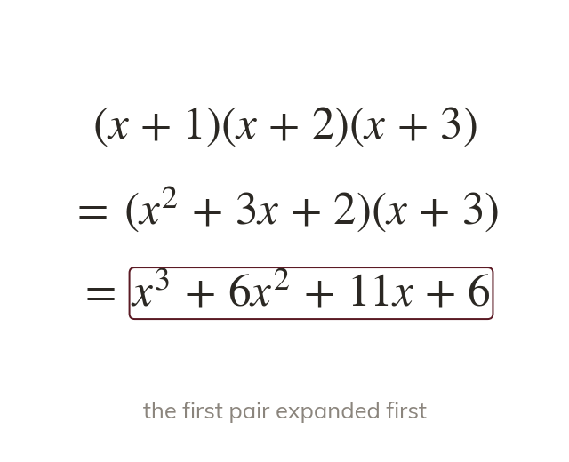
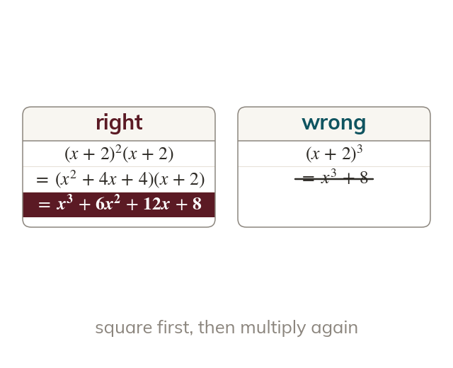
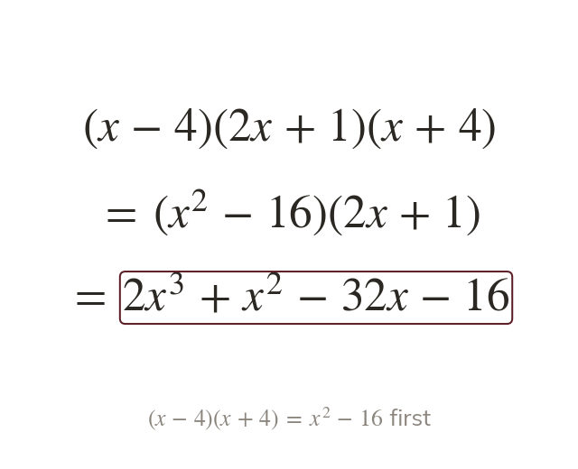

Every term times every term
When two brackets multiply, each term in the first multiplies each term in the second. A grid keeps track of every product.
Expanding turns a product of brackets into a sum of powers of x, the form that later chapters differentiate and integrate. The next lesson runs it backwards, factorising.
Work down the page at your own pace. Write every answer in your book first, then click to check it.
Read each card, then follow the worked examples one step at a time.

When two brackets multiply, each term in the first multiplies each term in the second. A grid keeps track of every product.

The same rule holds when one bracket has three terms, so there are six products. Like terms are then collected.

means so it has a middle term It is not
Pick an answer. If it's wrong, the feedback tells you which mistake it was.
Write the blanks in your book first, then tap each one to check.
Read each card, then follow the worked examples one step at a time.

Three brackets are multiplied two at a time. Expand one pair, then multiply every term of the result by the third bracket.

is so square the bracket first, then multiply by it once more. It is not

Brackets can be multiplied in any order, so expand the easiest pair first. A difference of two squares pair is quickest.
Pick an answer. If it's wrong, the feedback tells you which mistake it was.
Write the blanks in your book first, then tap each one to check.
Finished? Next lesson: 1.3 Factorising Expressions.
For each skill, tap the one that is true for you today. Your Revise pages start with anything you mark Not yet.
Your ratings are saved on this device only.
Log in, then search for a code to practise that skill.